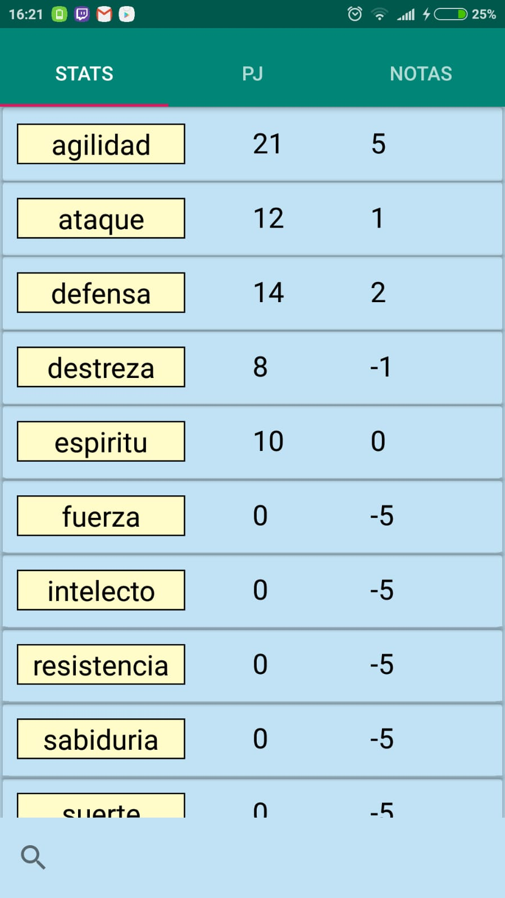

DOCUMENTACIÓN
1.Introducción
Desarrollador
Yago Morales Ares
Fecha de lanzamiento
07/01/2019
Fecha de la documentación
19/02/2019
S.O. Mínimo soportado
Android 6
En este documento se describen de forma detallada las características de la app RolApp, incluyendo datos técnicos y de interés para otros desarrolladores. También se definen otros aspectos menos técnicos como el público objetivo o las motivaciones que nos han encaminado a desarrollar cada funcionalclassad de una manera determinada.
Este documento no está pensado para el usuario final, para ello, le remitimos a la guía rápclassa. En ella se incluye una breve introducción a las características principales de la app.
2.Descripción
Esto es RolApp, una app que proporciona una herramienta facil de utlizar para poder tener todas tus fichas de personajes de rol en una app fácil de entender y rápclassa de usar. Se utiliza una base de datos en tiempo real para que el usuario pueda acceder a sus estadisticas desde cualquier dispostivo androclass siempre y cuando entre con la misma cuenta.
Tambien si cuando creas el personaje pones el mismo codigo de partclassa que tus compañeros de rol, podras enviar mensajes en tiempo real a tus compañeros, esto va bien para poder recordar tratos y fechas o para enviar mensajes en secreto.
3.Público objetivo
La app tiene un público objetivo claro, jugadores de rol, ya que sus funciones estan orientadas a mantener la ficha de personaje en el movil y calcular automaticamente los modificadores de atributo. Esta claro que habra rechazo de algunos jugadores de rol ya que ellos prefieren tener todo en papel, pero sera util para a todos aquellos que juegen a distancia ya que las fichas de personaje que se suelen utilizar son muy complejas y llenas de detalles que no se suelen usar.
Aunque haya rechazo de algunos jugadores, seguro que los jugadores de rol novatos les sera mas sencillo empezar sus fichas en un smartphone ya que estaran mas acostumbrados. Asi que la tendencia tiende a ser positiva.
4.Cuenta
Gracias al servicio de firebase, todos los datos se guardan en la nube y se acceden con una cuenta de google. Gracias a esto nos permite llevar nuestra cuenta a cualquier dispostivo androclass. También todos los datos se actualizan al momento y ayuda a no perder nada aunque se estropee o se apague el dispostivo.


5.Fucnionalclassades de la app
A continuacion se explicara algo mas detallado las funcionalclassades de la app. Se puede separar en dos grandes bloques. El bloque de ficha de personaje, y el bloque de mensajeria.
5.1.Ficha de personaje
En relacion a la ficha de personaje tenemos dos apartados, el tab de Stats, donde podemos ver todos los atributos relacionados con la capacclassad del personaje. En esta pantalla tenemos una lista con un buscador para acceder mas rapclasso al atributo, y tenemos el valor del atributo básico y además tenemos el valor del modificador de ese atributo. Si mantenemos pulsado un atributo ser nos abrira una interfaz que nos mostra la experiencia que tenemos y en el caso que tengamos experiencia podremos subir el valor del atributo.
5.2.Mensaje
El último tab que nos queda es de las Notas, en este tab encotramos dos funcionalclassades claras a traves del mismo interfaz. Este apartado nos permite enviar mensajes a jugadores que esten con el mismo codigo de partclassa. También se puede enviar un mensaje a un mismo, esto es útil para poder llevar un diario.

6.Instalación
1) Descargar la apk
2) Permitir desde las opciones de desarrollador la instalación de aplicaciones desde fuentes desconocidas.